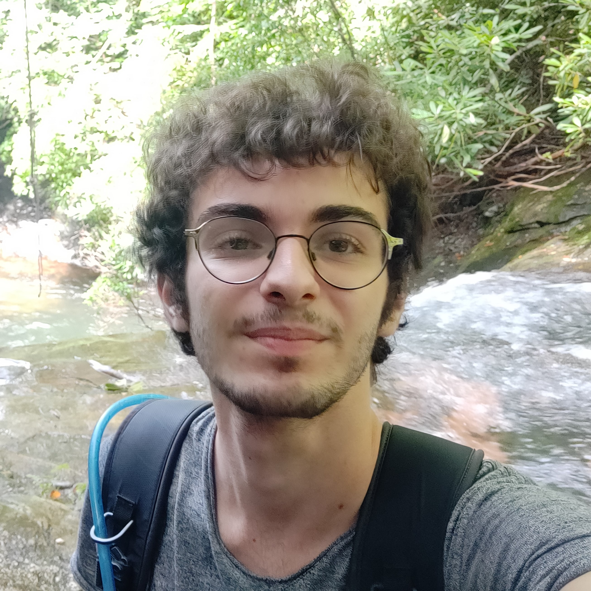

-

Emi Saegusa AutoAquaponics
Green Wall -
Anna Seeley McGillis AutoAquaponics -

Eduardo Andrade AutoAquaponics Biology Subteam Lead -

William Lopez-Wortman AutoAquaponics -

Johnny Chen AutoAquaponics -

Lev Rosenberg AutoAquaponics -
![Spencer Huie graduated with a B.S. Industrial Engineering and Data Science. Through ESW, he used his interests in engineering and business to promote sustainability. He was ESW's Finance Chair, ensuring that project teams have the necessary funding and materials; he was also a member of AutoAquaponics, and worked on the plumbing system.LINKEDINLINKhttps://www.linkedin.com/in/spencer-huie-8a28461b7?lipi=urn%3Ali%3Apage%3Ad_flagship3_profile_view_base_contact_details%3BMER1MgaiQgunMX6HE%2F9cAQ%3D%3D](../images/exec/Spencer_Huie_Headshot.jpg)
Spencer Huie Finance Chair
AutoAquaponics -

Alejandra Almonte AutoAquaponics -
![Bill graduated with a B.S. in Mechanical Engineering, minor in Environmental Engineering, and the Segal Design Certificate in 2023. He founded AutoAquaponics during Spring Quarter of his freshman year, and led the team to hit their milestone of building an autonomous farming system capable of running for a full month without human interference. Bill also served as one of the ESWNU Co-Presidents from 2021-2023, during which he planned ESWNU's best water-related social events. He is currently pursuing his PhD in Electrical Engineering at Stanford, where he works to invent new low-power sensing and wireless communication technologies for sustainable electronics.LINKEDINLINKhttps://www.linkedin.com/in/bill-yen/PORTFOLIOLINKhttps://billyen33.com](../images/exec/Bill Yen.jpg)
Bill Yen Executive
AutoAquaponics -
![Callista Sukohardjo received her B.S. in Manufacturing and Design Engineering at Northwestern University, along with the Kellogg Managerial Analytics Certificate and the ISEN (Institute for Sustainability and Energy at Northwestern) Certificate. Her passion for ESWNU stemmed from living in Indonesia and observing how the environment around her could be improved through exploring and advocating for sustainable design alternatives instead of conventionally used materials and processes. In her role as Co-President, she strove to incorporate and advocate for sustainability on Northwestern's campus, and is passionate about the work that ESWNU does.LINKEDINLINKhttps://www.linkedin.com/in/callista-sukohardjo/PORTFOLIOLINKhttp://callista-sukohardjo.com/](../images/exec/Callista Sukohardjo.JPG)
Callista Sukohardjo Executive -
Edward Lee AutoAquaponics -
 Niv Landau AutoAquaponics -

Marcos Sanchez AutoAquaponics Project Manager -

Cameron Moore Green Wall Project Manager -
![Raymonde Council is a senior studying Materials Science and Engineering with a minor in Art Theory and Practice. Spending time outdoors was a big part of her life growing up, and she joined ESWNU to ensure future generations have that same opportunity. As a Co-Public Relations Chair, she helped promote ESWNU-related events and initiatives; as a member of the AutoAquaponics team, she helped design and build the plumbing system for an automated aquaponic farm.LINKEDINLINKhttps://www.linkedin.com/in/raymonde-council-7613711a9](../images/exec/Raymonde Council.JPEG)
Raymonde Council Executive
AutoAquaponics -
![Katie graduated with a BS in Civil Engineering with passions for architecture and environmental policy (EPC). Her favorite classes are those involved in her EPC minor: Climate Energy Law, Environment and Society, History of Food within the United States, etc. She formerly acted as one of two Project Managers for SmartTree and loves her work with the group. She's super proud of all the work her, Cally and the rest of their team have put together since beginning the role in Spring of 2021!LINKEDINLINKhttps://www.linkedin.com/in/katie-lev/](../images/exec/Katie Lev.jpeg)
Katie Lev Secretary -

Ben Caterine Executive
AutoAquaponics -

Lester Tai AutoAquaponics Project Manager
Webmaster
×